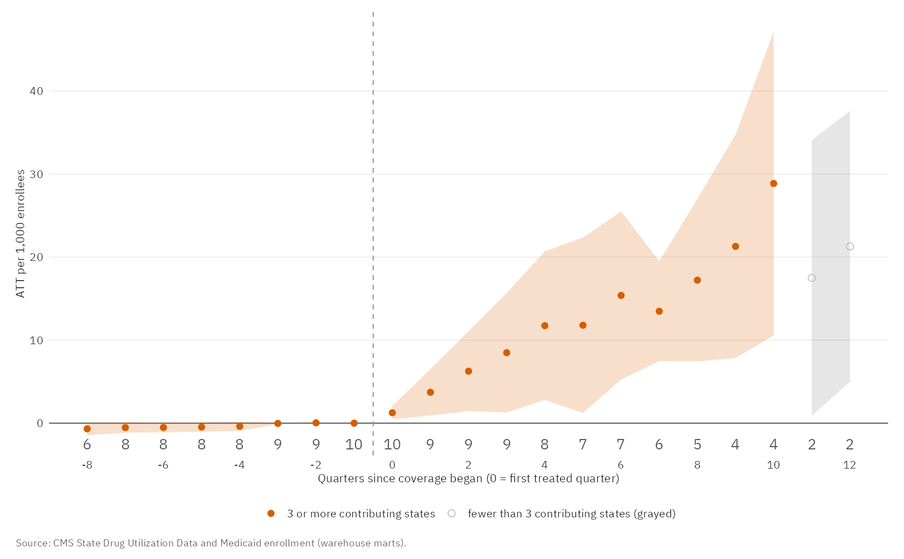
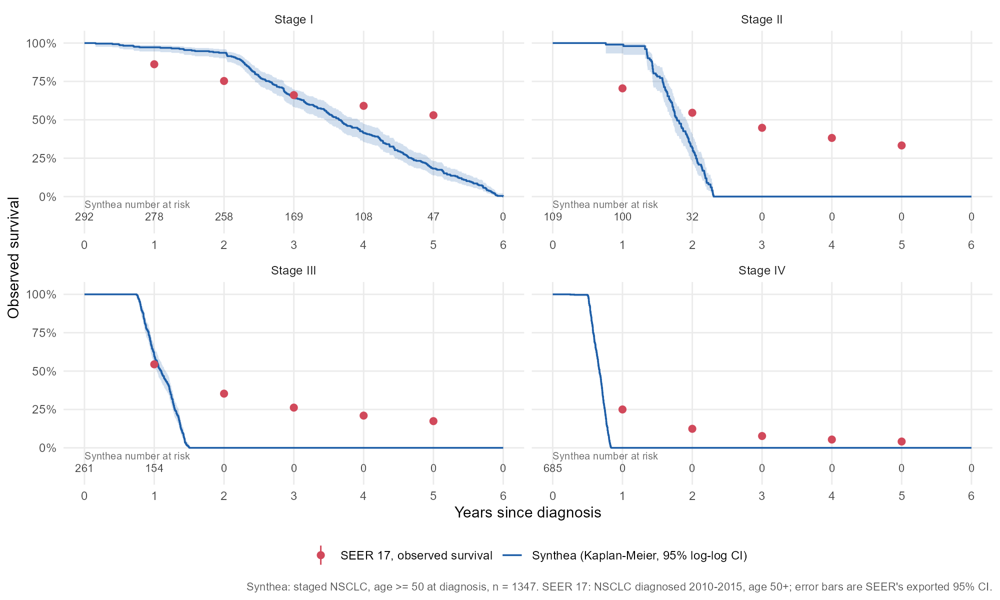

I work on real-world evidence, causal inference, health economics and healthcare AI. I build the analysis and the pipeline around it, and I check my methods against a known answer where I can.
Richmond, Kentucky · 17+ years in epidemiology and global health analytics
Open to HEOR, real-world evidence and market access roles.
Two studies, each with a live report. One asks what a policy did; the other asks whether synthetic data can be trusted.
Access and value of obesity drugs in Medicaid
A public-data study of what happened when state Medicaid programs covered Wegovy and Zepbound, with a tested warehouse (PostgreSQL, dbt), an R analysis, a Quarto report and an interactive budget model.
12.2more prescriptions per 1,000 enrollees per quarter95% CI 8.4 to 16.0
$161.3Mnet cost over five yearsfor a 1-million-enrollee program, central case
Public aggregate data; associations and scenarios, not effects of any company's promotion.

Estimated effect of coverage on prescriptions, by quarter since coverage began.
Oncology RWE: how realistic is synthetic EHR data?
An NSCLC survival pipeline on synthetic EHR data (Synthea to OMOP CDM to dbt to R), benchmarked against 172,582 real U.S. patients from SEER. It documents a case where the synthetic data failed validation: unmodified Synthea staged every lung cancer as stage I.
53% vs 18%five-year survival, stage ISEER versus Synthea
172,582SEER patients used as the benchmarkNSCLC, diagnosed 2010 to 2015, age 50+
Medians alone would have passed the data as realistic; the full curves show it can test a pipeline but not stand in for real-world outcomes.
Synthetic patient-level data plus public registry aggregates. A methods demonstration, not clinical evidence.

Kaplan-Meier survival by stage, Synthea versus SEER.
Companion: checking the methods against a known truth
A Python pipeline on a custom generator whose true answers are recorded. It derives lines of therapy with rule-based logic (98.1% whole-sequence exact match against truth), then tests IPTW, an immortal-time-bias demonstration and a 10-seed Monte-Carlo bias and coverage study. In the demonstration, a treatment with no effect appears to cut mortality by about 45% unless exposure is handled as time-varying.
I have spent more than 17 years in epidemiology, global health analytics, data science and agentic AI, underpinned by doctoral training in epidemiology.
PhD, EpidemiologyJomo Kenyatta University of Agriculture and Technology
MSc, Health Systems ManagementKenya Methodist University